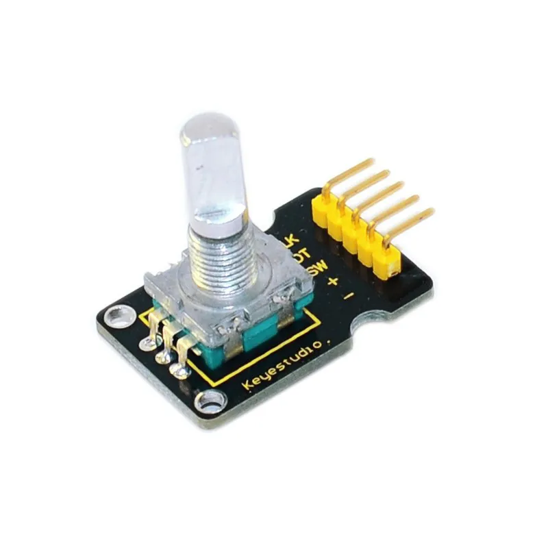

Descrição do Produto
Sensor de ângulo rotativo é baseado no 10k o botão potenciômetro ajustável módulo de sensor de ângulo, a saída é 0 ~ valores de simulação VCC, a tensão de saída será como o ângulo de rotação potenciômetro e mudanças lineares.
Detalhes do Produto
- Voltagem: 3.3V a 5V
- Porta: Analógica
- Resistência: 20K
- Ângulo de Rotação: 270 graus
- Tamanho: 26mm x 20mm
- Peso: 5g